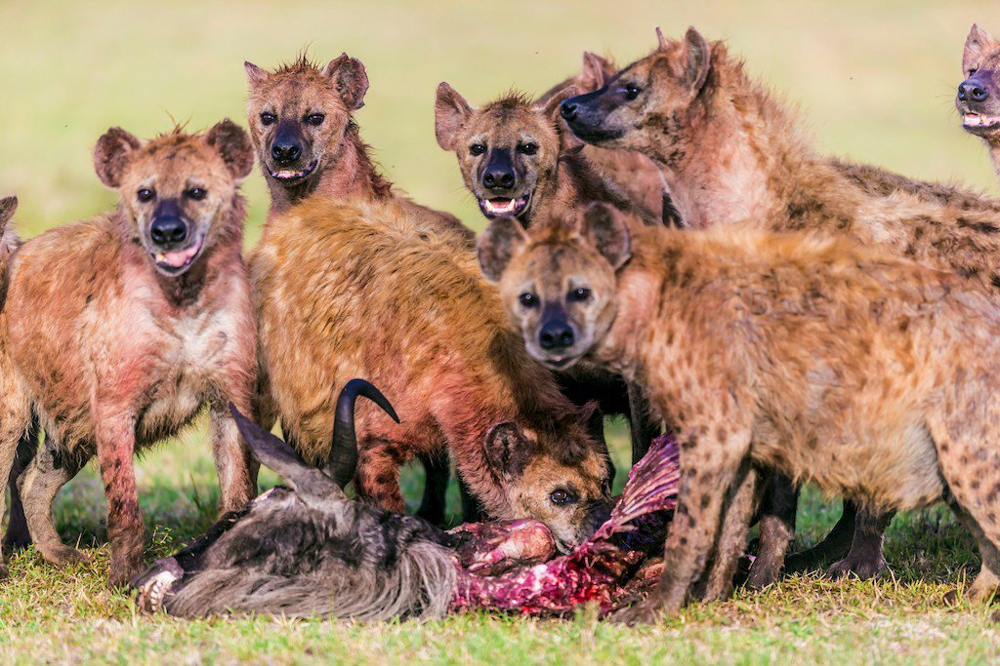

A pesar de su mala –aunque cierta– fama de carroñero aprovechado, la hiena es un animal cuyas características
físicas están hechas para cazar, y lo hace a menudo. En la sabana africana es capaz de atrapar ñus, antílopes y
algunos pájaros y serpientes.

Por lo general se trata de animales nocturnos, que gozan de muy buen oído y visión, y de una gran agilidad
debido a las garras de sus patas, que les permiten arrancar y correr a gran velocidad. Cazan en grupo , aislando
a la presa y persiguiéndola entre todos los miembros para luego disputarse el trofeo. Una de sus características
más conocidas es su famosa "risa", un tipo de aullido o gemido que emiten de forma frecuente. Se organizan en
grandes manadas llamadas clanes que pueden incluir hasta 80 individuos y son conducidos por las hembras.
La relación entre hienas y hombres es cada vez más estrecha. En un África cada vez más superpoblada, las hienas
y los seres humanos entran en contacto frecuente. De hecho, el pueblo Masai de Kenia y Tanzania deja en
ocasiones a sus muertos en campo abierto para que sean comidos por las hienas. Sin embargo, estos animales,
inteligentes y audaces, irrumpen cada vez mas a menudo en los cultivos y son culpados por la muerte del ganado e
incluso de algunos seres humanos.
A pesar de su fama de carroñeras las hienas se alimentan principalmente de presas vivas. Se pueden organizan en grupos para cazar y persiguen a sus presas a más de 60 km/h durante largas distancias. Los leones son los principales competidores de las hienas ya que se alimentan de las mismas presas y en ocasiones se roban las presas unos a otros. Las mandíbulas de las hienas son extremadamente poderosas, son capaces de triturar huesos, pezuñas o incluso cuernos de sus presas, en relación a su tamaño poseen las mandíbulas más fuertes que existen. Los cachorros de hiena manchada nacen con los sentidos de la vista, el oído y el olfato muy desarrollados y con todos sus dientes.